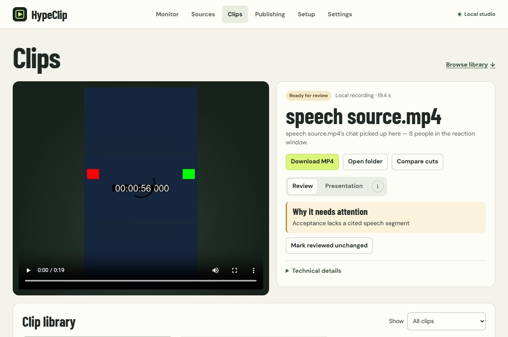

HypeClip for Windows
Turn streams and recordings into vertical clips. HypeClip runs on your PC and opens the studio in your browser.
Windows x64 · Internet access for first setup
If Windows blocks the unsigned installer, use the ZIP.

Quick start
Read the full guide-
Open HypeClip
Run the installer, then open HypeClip from the Start menu. For the ZIP, choose Extract All and open Start HypeClip.cmd.
-
Install tools and models
In the browser, open Setup and choose Install tools and models. Allow time for several GB of downloads.
-
Make your first clip
Choose a local recording you have permission to edit, check the source, and select Monitor once. Find finished MP4s in Clips.
Local clips work without API keys. Pick a save location in Settings → Clips folder.
Run from your own fork
- When creating the fork, clear Copy the main branch only.
-
In your fork, select
codex/guided-setupand choose Code → Download ZIP. - Extract the ZIP and run Start HypeClip.cmd.